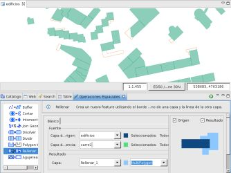
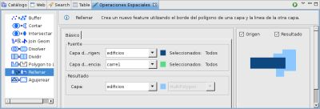
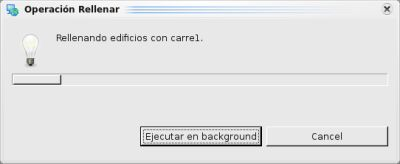

{kind=link}
{kind=link}
{kind=link}

Figura 4. Capa Resultado.
Crea un nuevo feature utilizando el borde del polígono de una capa y la linea de la otra capa.
La Operación Rellenar toma los features de la capa fuente y utiliza los features LineString de la segunda capa para rellenarlos.
El resultado de la Operación Rellenar se puede almacenar en una nueva capa, en una existente o en la citada capa fuente.
En este ejemplo vamos a realizar la Operación Rellenar entre la capa edificios.shp de tipo polígono y la capa carre1.shp de tipo LineString y el resultado se agregara a la capa edificios.shp.

Figura 1. Antes de la operación.
Nos dirigimos a la Vista de Operaciones Espaciales, y seleccionamos Rellenar en el menú de Operaciones.
Aparecen las opciones específicas de la Operación Rellenar.
Debemos indicar los valores de entrada de la operación, como se muestra en la Figura 2:

Figura 2. Definir las capas de entrada y resultante.

Figura 3. Diálogo de progreso.
Una vez que finaliza la Operación, si se creó una nueva capa para almacenar el resultado, ésta será automáticamente añadida al Mapa actual.
La Figura 4 muestra la recién creada Capa (Rellenar_1) añadida al mapa, con los Features resultantes de aplicar la operación entre las Capa fuente y Capa de referencia.
Figura 4. Capa Resultado.